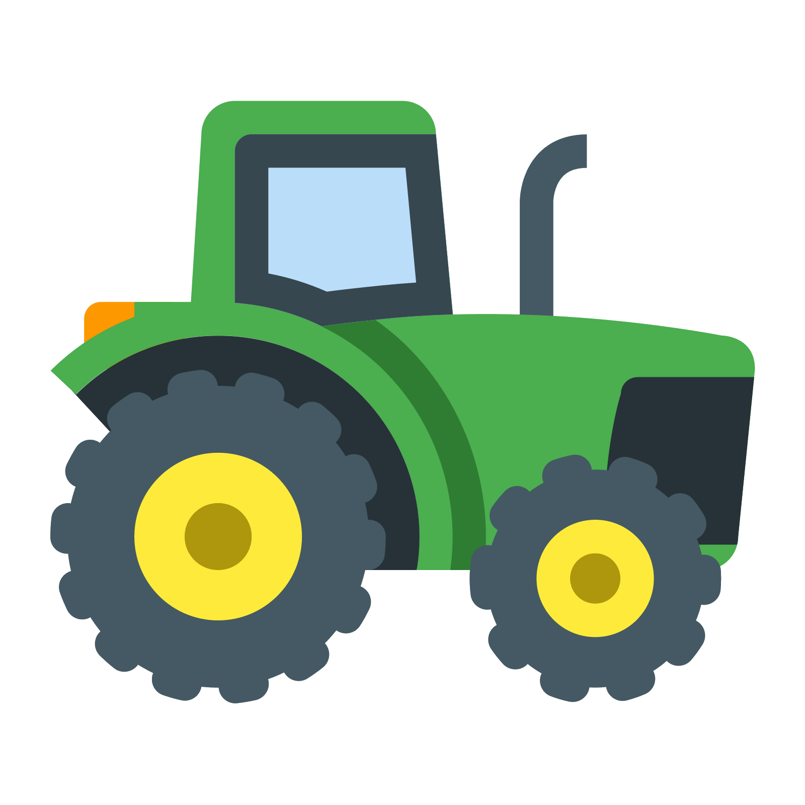

Water in a watering can

Health of the Tractor
Family Raid House #{{houseid}}
Press [ R ] to start raid
{{RobHead}}
{{RaidID > 18?RaidOn + " Raid" : 'Raid'}}
FIB({{orgcount}}) VS {{RaidOn}}({{onraidcount}})
Legal Orgs ({{orgcount}}) VS Gangs ({{onraidcount}})
{{item.fractionname}} {{item.count}}